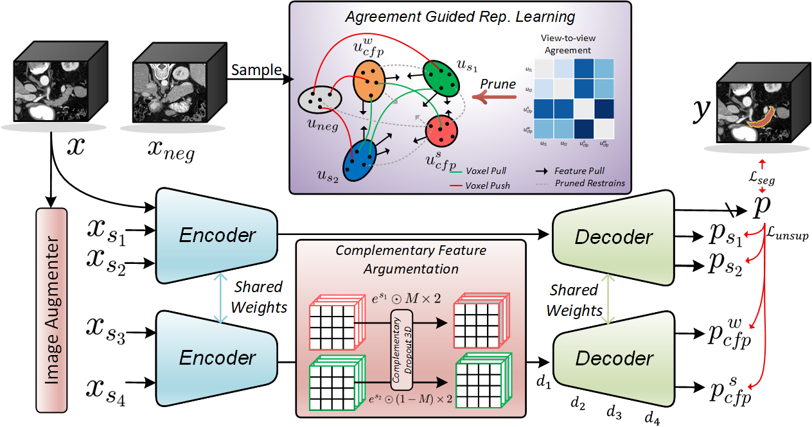

About
I am a PhD student in Mechanical Engineering at the Massachusetts Institute of Technology, advised by Prof. Kevin Chen, and collaborating with Prof. Zachary Manchester on constrained optimal control and lightweight optimization-based controllers for robotic systems. Previously, I received my M.S. in Robotics from the Carnegie Mellon University Robotics Institute, where I was co-advised by Prof. Carmel Majidi and Prof. Zachary Manchester.
My research centers on embodied intelligence for robotic systems operating in complex environments. As a full-stack roboticist, I believe robust autonomy requires the co-design of hardware, models, controllers, and learning algorithms.
News
- 2026.07Our RSS 2026 paper Realizing Robotic Swimming with Unified Fluid–Robot Multiphysics was selected as an Outstanding Paper Award finalist.
- 2026.04Paper on Strongly-Coupled Fluid–Robot Multiphysics accepted at RSS 2026!
- 2026.06Our paper Programmable online stiffness modulation for optimized aquatic locomotion was published in npj Robotics.
- 2025.10Two workshop papers presented at CoRL 2025 — SwimGym and Unified Multiphysics.
- 2025.07Paper on Aerial-Aquatic Robot accepted at IROS 2025 (Oral).
- 2025.06Workshop paper on Unified Multiphysics Framework presented at ICRA 2025 Workshop.
- 2025.05Paper on RepMatch under review at WACV 2026.
- 2024.08Joined CMU Robotics Institute as a graduate research assistant.
- 2024.05Awarded Best Capstone Project (1 / 130).
- 2023.11Awarded Chinese National Scholarship (top 0.8%).
Selected Publications


